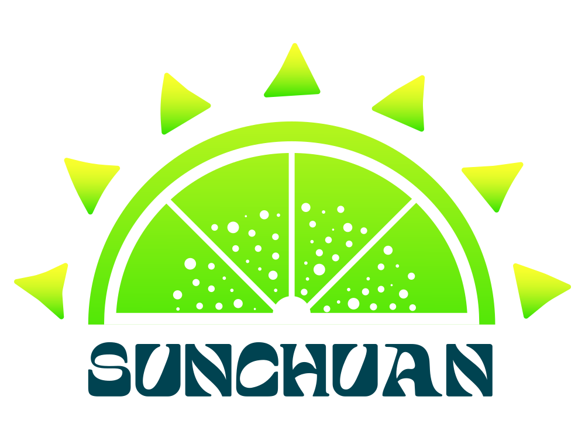
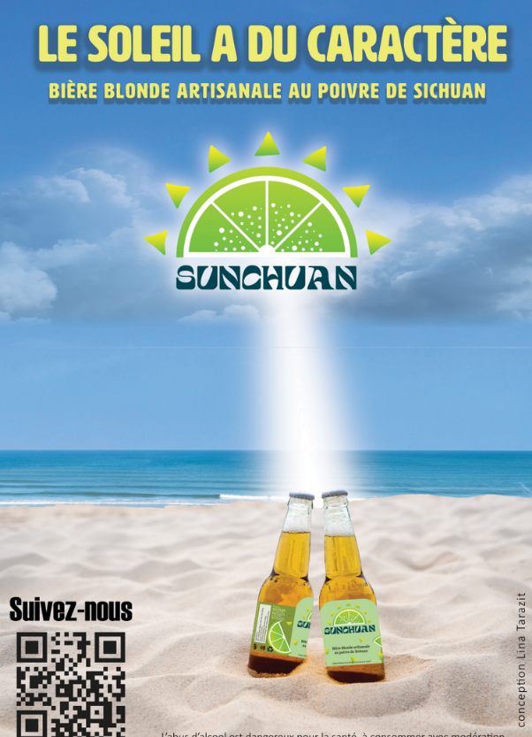
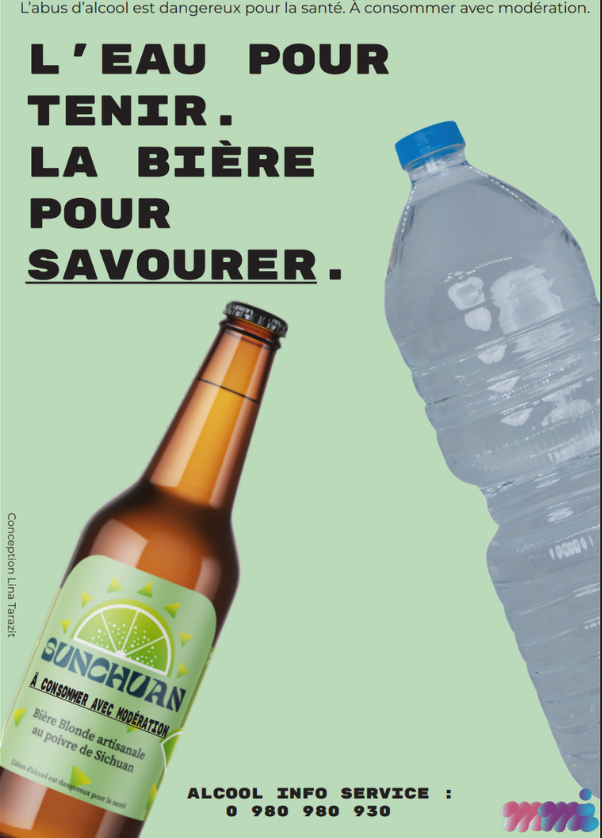
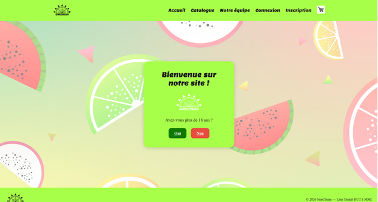

Mes projets

Portrait Illustrator
Portrait vectoriel réalisé sur Illustrator pour développer mes compétences en design graphique.

Affiche Maldive
Affiche de voyage réalisée sur Illustrator en appliquant les notions vues en cours.
Logo AntiGas’P
Création du logo de l’association AntiGas’P dans le cadre d’un projet universitaire.


Logo AKOU
Logo réalisé pour une pâtissière indépendante pour ses réseaux et son site.

Identité visuelle SunChuan
Création du logo et de ses variantes pour une bière artisanale au poivre de Sichuan.

Étiquette SunChuan
Étiquette professionnelle réalisée sur Illustrator, envoyée à l’impression.

Affiche promotionnelle SunChuan
Affiche A3 mettant en valeur la bière artisanale SunChuan.

Affiche prévention alcool
Affiche de sensibilisation sur les risques liés à la consommation d’alcool.

Affiche IA & consommation d’eau
Affiche de sensibilisation sur la surconsommation d’eau liée à l’usage de l’IA.

Festival Sucré
Création complète de l’identité visuelle du Festival Sucré : logo, affiches, goodies, signalétique.

Billet Festival Sucré
Billet d’entrée du Festival Sucré, décliné selon la charte graphique.

Signalétique Festival Sucré
Panneaux de signalisation pour guider les visiteurs du festival.

Site SunChuan (MVC)
Site complet développé en PHP, HTML, CSS, JS et SQL. Hébergé sur serveur IUT.
Voir le site